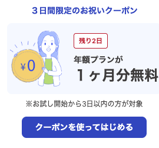
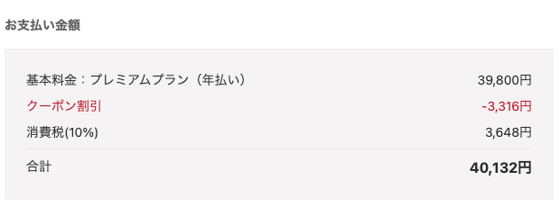

このページの要点
freee会計は帳簿づけから確定申告書の作成、e-Tax での提出までをブラウザーやスマホで行うクラウド会計ソフトです。ここでは個人事業主向けのプランについて、申し込む前に気になりやすい点を、freee が公開している情報をもとにまとめました。
個人事業主向けの主なプランは次のとおりです（税抜）。年払いのほうが安く、どのプランも自動更新です。
| プラン | 月払い | 年払い | 主な違い |
|---|---|---|---|
| スターター | 1,780円/月 | 11,760円/年 | 確定申告書の作成。消費税の申告はできない |
| スタンダード | 2,980円/月 | 23,760円/年 | 消費税の申告ができる。チャット・メールが優先対応 |
| プレミアム | （年払いのみ） | 39,800円/年 | 電話サポート、乗り換えの代行、税務調査サポート補償 |
運営者がお試しを始めたときは、画面に「3 日間限定のお祝いクーポン」が出ました。お試しを始めてから 3 日以内の人が対象で、年額プランが 1 か月分無料になる、という内容です。料金ページには書かれていないので、出るかどうかや中身は時期によって変わるかもしれません。年払いにするつもりなら、お試しの最初の数日でクーポンが出ていないか確かめておくとよさそうです。とくにプレミアムは年払いしかないので、プレミアムにすると決めているなら、使わない理由はあまりありません。

プレミアムの購入画面で確かめたところ、クーポンは「1 か月分の料金を年額から引く」形でした。基本料金 39,800円からクーポン割引 3,316円が引かれ、消費税 10% を足した合計は 40,132円（税込）でした。

このほかに、入力作業を代行してもらえる「入力おまかせ」プラン（年 49,800円）もあります。スマホアプリの中から買う場合は料金が違い、税込で表示されています。
出せません。お試しでは申告内容の入力まではできますが、申告書の出力はできません。
料金ページには 30 日間無料で試せて、クレジットカードの登録はいらないと書かれています。ただしヘルプセンターの表では、お試し中は次のような制限があります。
お試しは「画面が自分に合うか」「明細の取り込みがうまくいくか」を確かめる期間と考えるのがよさそうです。30 日は登録した日から数えるので、申告の作業をする時期に合わせて始めると無駄がありません。
なりません。お試し期間が過ぎると、自動で「プラン未契約」に切り替わります。
有料になるのは、自分で有料プランを選んでクレジットカードを登録したときです。登録するとすぐに最初の支払いが行われ、お試しの残りの日数はなくなります。
ただし、プラン未契約になると、取引データの閲覧・編集や確定申告書類の作成ができなくなります。取り込んだ明細などのデータは保存されている、とヘルプセンターに書かれています。
所得税の確定申告書と青色申告決算書は、スターターでも作れます。足りるかどうかの分かれ目になりそうなのは、次の 2 つです。
自分が消費税の申告をする必要があるかどうかは、国税庁の案内や税務署で確かめてください。
電話サポートはプレミアムだけです。スターターとスタンダードは、チャットとメールで問い合わせます。
freee は、〇×の質問に答えていくと確定申告書ができる作りになっている、と料金ページに書かれています。簿記を知らない人向けの作りです。その反面、仕訳の形で入力したい簿記の経験者には入力の仕方が独特に感じられる、という声が比較記事ではよく挙がります。
運営者が実際に触ってみた感想
いちばん楽だと感じたのは、明細の仕訳です。お試しのホーム画面に出てくる「まるっと仕訳」を使うと、銀行口座とクレジットカードを登録するだけで、取り込まれた明細が自動で仕訳されました。1 件ずつ入力しなくて済むのは、とても楽でした。
レビューサイトの ITreview では、2026 年 11 月 7 日の時点で freee会計に 329 件のレビューがあり、総合評価は 5 点満点で 4.1 でした。ただし、投稿者の多くは会社で使っている人で、個人事業主向けのプランだけの評価ではありません。新しいほうの 10 件（2026 年 11 月）を読むと、次のような声が多く見られました。
弥生と同じく、自動の仕訳は取り込まれた内容を一度は見直したほうがよさそうです。
このページに書いた条件から分けると、次のようになります。
合いそうな人
合わなそうな人
まずは無料のお試しで、画面の使い心地と明細の取り込みを確かめるのがおすすめです。カードの登録はいらず、期間が過ぎても自動で有料にはなりません。
ほかの 2 社との違いは 3 社の比較 にまとめています。